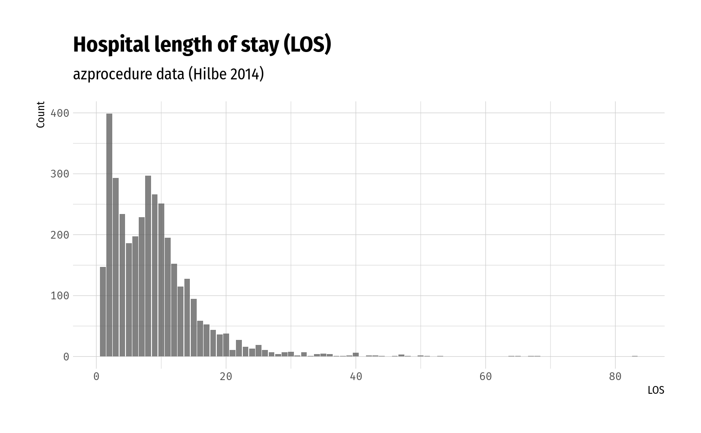
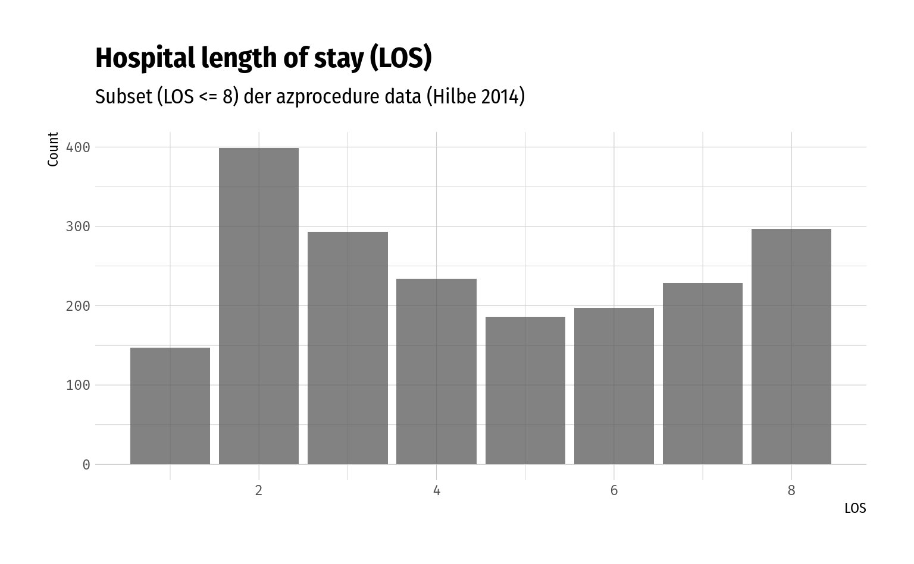

D Unsorted
Hier liegen temporär Opfer der Umstrukturierung, bis sie ein passendes zu Hause gefunden haben, oder auf die farm upstate umziehen.
D.0.1 General Advice
- Starte mit einem Poisson-Modell und baue darauf auf
- Benutze robuste Varianzschätzer (e.g. sandwich, Bootstrap-SEs sind meist den Aufwand nicht wert) – entweder sie helfen, oder sie schaden nicht.
- Das gängigste Problem ist overdispersion, aber nicht jede overdispersion ist gleich.
- Die erwartete Anzahl an Nullen (unter Poisson) ist \(\exp(-\bar{x}) \cdot n\)
D.0.2 Beispiel nach Hilbe (2014), p. 211ff
(Eigentlich kompliziertes Beispiel, weil 0 counts nicht möglich sind, müsste man truncated drangehen)
Grundlage ist der Datensatz azprocedure (siehe Abschnitt 1.1) zur Dauer des Krankenhausaufenthalts.
Zuerst werfen wir einen Blick auf die Daten und fitten ein reguläres Poissonmodell.
| N | Missing | Mittelwert | Varianz | Range |
|---|---|---|---|---|
| 3589 | 0 | 8.83 | 47.97 | [1, 83] |
# Barchart: So grob poissonverteilt?
ggplot(data = azprocedure, aes(x = los)) +
geom_bar(alpha = .75) +
labs(
title = "Hospital length of stay (LOS)",
subtitle = "azprocedure data (Hilbe 2014)",
x = "LOS", y = "Count"
)
# Model fit
model_azproc <- glm(los ~ procedure + sex + admit,
data = azprocedure, family = poisson())
# Model output (ohne exponentierte Koeffizienten)
pander(model_azproc)| Estimate | Std. Error | z value | Pr(>|z|) | |
|---|---|---|---|---|
| (Intercept) | 1.491 | 0.01539 | 96.91 | 0 |
| procedure | 0.9574 | 0.01218 | 78.61 | 0 |
| sex | -0.1302 | 0.01179 | -11.04 | 2.408e-28 |
| admit | 0.3331 | 0.0121 | 27.52 | 1.11e-166 |
#> X-squared(3585) = 11588.08
#> Pearson Dispersion = 3.232Der Dispersionsindex lässt auf overdispersion schließen.
Betrachten wir ein Subset der Daten, indem wir nur Beobachtungen mit \(\mathtt{LOS} \le 8\) betrachten, erhalten wir ein anderes Bild:
| N | Missing | Mittelwert | Varianz | Range |
|---|---|---|---|---|
| 1982 | 0 | 4.47 | 5.34 | [1, 8] |
# Barchart
ggplot(data = azprocedure_subset, aes(x = los)) +
geom_bar(alpha = .75) +
labs(
title = "Hospital length of stay (LOS)",
subtitle = "Subset (LOS <= 8) der azprocedure data (Hilbe 2014)",
x = "LOS", y = "Count"
)
model_azproc_u <- glm(los ~ procedure + sex + admit,
data = azprocedure_subset, family = poisson())
pander(model_azproc_u)| Estimate | Std. Error | z value | Pr(>|z|) | |
|---|---|---|---|---|
| (Intercept) | 1.187 | 0.02498 | 47.52 | 0 |
| procedure | 0.731 | 0.02398 | 30.48 | 4.848e-204 |
| sex | -0.06892 | 0.02294 | -3.004 | 0.00266 |
| admit | 0.3097 | 0.02236 | 13.85 | 1.286e-43 |
#> X-squared(1978) = 1562.75
#> Pearson Dispersion = 0.790In diesem Fall haben wir es mit underdispersion zu tun, also versuchen wir es mal mit der GP:
library(VGAM)
library(gamlss)
mod_gp_vgam <- vglm(los ~ procedure + sex + admit, data = azprocedure_subset, family = genpoisson())
mod_gp_gamlss <- gamlss(los ~ procedure + sex + admit, data = azprocedure_subset, family = GPO())#> GAMLSS-RS iteration 1: Global Deviance = 7969.342
#> GAMLSS-RS iteration 2: Global Deviance = 7961.567
#> GAMLSS-RS iteration 3: Global Deviance = 7961.567#>
#> Call:
#> vglm(formula = los ~ procedure + sex + admit, family = genpoisson(),
#> data = azprocedure_subset)
#>
#> Pearson residuals:
#> Min 1Q Median 3Q Max
#> rhobitlink(lambda) -0.6573 -0.5912 -0.28788 0.2773 6.782
#> loglink(theta) -2.3158 -0.6304 0.07304 0.8734 1.627
#>
#> Coefficients:
#> Estimate Std. Error z value Pr(>|z|)
#> (Intercept):1 -0.24021 0.03523 -6.819 9.16e-12 ***
#> (Intercept):2 1.30125 0.02766 47.042 < 2e-16 ***
#> procedure 0.71846 0.02143 33.521 < 2e-16 ***
#> sex -0.06760 0.02043 -3.308 0.000939 ***
#> admit 0.31193 0.01993 15.652 < 2e-16 ***
#> ---
#> Signif. codes: 0 '***' 0.001 '**' 0.01 '*' 0.05 '.' 0.1 ' ' 1
#>
#> Names of linear predictors: rhobitlink(lambda), loglink(theta)
#>
#> Log-likelihood: -3956.379 on 3959 degrees of freedom
#>
#> Number of Fisher scoring iterations: 6
#>
#> No Hauck-Donner effect found in any of the estimates#> ******************************************************************
#> Family: c("GPO", "Generalised Poisson")
#>
#> Call: gamlss(formula = los ~ procedure + sex + admit, family = GPO(),
#> data = azprocedure_subset)
#>
#> Fitting method: RS()
#>
#> ------------------------------------------------------------------
#> Mu link function: log
#> Mu Coefficients:
#> Estimate Std. Error t value Pr(>|t|)
#> (Intercept) 1.18687 0.02980 39.824 <2e-16 ***
#> procedure 0.73075 0.03959 18.456 <2e-16 ***
#> sex -0.06892 0.02643 -2.607 0.0092 **
#> admit 0.30974 0.02750 11.264 <2e-16 ***
#> ---
#> Signif. codes: 0 '***' 0.001 '**' 0.01 '*' 0.05 '.' 0.1 ' ' 1
#>
#> ------------------------------------------------------------------
#> Sigma link function: log
#> Sigma Coefficients:
#> Estimate Std. Error t value Pr(>|t|)
#> (Intercept) -36.04 2246.20 -0.016 0.987
#>
#> ------------------------------------------------------------------
#> No. of observations in the fit: 1982
#> Degrees of Freedom for the fit: 5
#> Residual Deg. of Freedom: 1977
#> at cycle: 3
#>
#> Global Deviance: 7961.567
#> AIC: 7971.567
#> SBC: 7999.527
#> ******************************************************************Beispiel aus Hilbe 2014. Eigentlich sollte \(\delta \approx -0.1195\) und \(\theta = \frac{1}{(1 - \delta)^2} \approx 0.799\)
Literatur
Hilbe, Joseph M. 2014. Modeling Count Data. Cambridge: Cambridge University Press. https://doi.org/10.1017/CBO9781139236065.